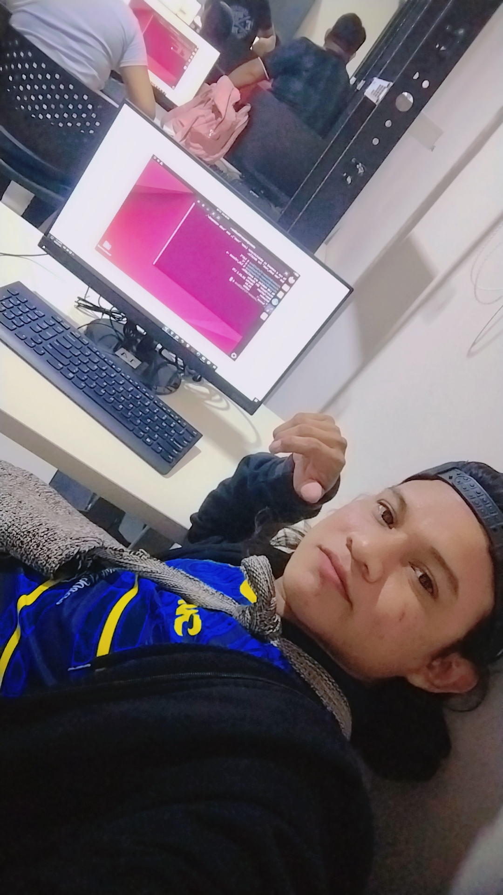

Nicanor Pushaina
Ing. Sistemas y Creador de Contenido
Estudiante del programa de Ingeniería de Sistemas en la Universidad de La Guajira, sede Maicao. Actualmente soy creador de contenido por fuera de la Universidad y busco un enfoque en la carrera encaminada en las redes. Cuento con experiencia en la creación de contenido, mantenimiento de equipos y optimización de sistemas empresariales. Mi enfoque está en el aprendisaje sobre el uso de als redes y mantenimiento de la seguridad de estas..
Lenguajes: bootstrap, SQL Server
Youtube: https://www.youtube.com/@bratowinner , Tiktok: https://www.tiktok.com/@brato_winner